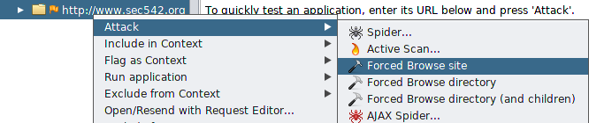
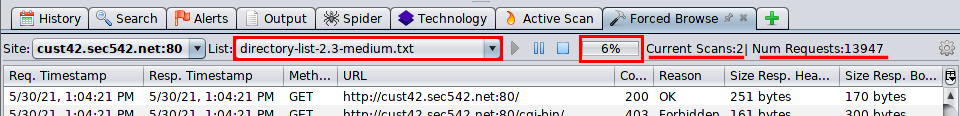
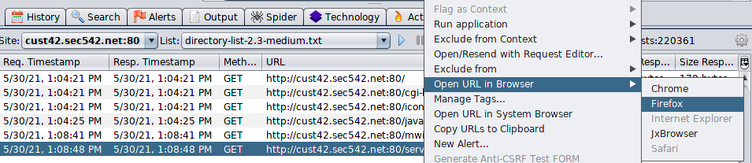
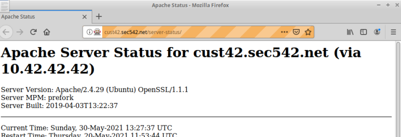

ZAP with Dirbuster lists
We can check the various Lists that we can use here:
https://github.com/igorhvr/zaproxy/tree/master/src/dirbusterWe need to check the directories
found with Code-Reason:
◇ 200 - OK
◇ 301 - Moved Permanently
What we are not interested:
◇
403 - Forbidden → suggests that, at present at least, we are not being given immediate access
Directory →
Open URL in Browser → Firefox
Example of Sensitive Directory found:
